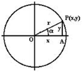
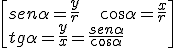
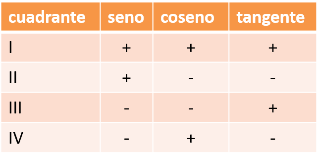
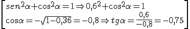
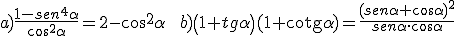

Si P(x,y) es el punto de intersección de la circunferencia de radio r y el radio del ángulo, entonces:


\[\begin{array}{l} sen\alpha = \frac{y}{r}\;\quad \quad \cos \alpha = \frac{x}{r}\\ tg\alpha = \frac{y}{x} = \frac{{sen\alpha }}{{\cos \alpha }} \end{array}\]
El signo de las razones en los cuadrantes es:

Propiedades:
- sen2 α + cos2 α = 1, por el Teorema de Pitágoras.
- tg2 α + 1 = sec2 α, si dividimos la fórmula anterior por cos2 α
- -1 ≤ senα ≤ 1 -1 ≤ cosα ≤ 1
Con estas propiedades, podemos calcular todas las razones si conocemos una de ellas.
Ejemplo: si sen α = 0,6 y α є II cuadrante, encuentra las demás razones.

\[\begin{array}{l} se{n^2}\alpha + {\cos ^2}\alpha = 1 \Rightarrow {0,6^2} + {\cos ^2}\alpha = 1\\ \cos \alpha = - \sqrt {1 - 0,36} = - 0,8 \Rightarrow tg\alpha = \frac{{0,6}}{{ - 0,8}} = - 0,75 \end{array}\]
Ejercicios:
1.- Calcula las otras razones de estos ángulos
a) cosα = 5/13 y α € IV cuadrante
b) tanβ = -3/4 y β € II cuadrante
2.- Verifica estas identidades:

a)\frac{1-se{{n}^{4}}\alpha }{{{\cos }^{2}}\alpha }=2-{{\cos }^{2}}\alpha \quad \quad b)\left( 1+tg\alpha \right)(1+\text{cotg}\alpha )=\frac{{{\left( sen\alpha +\cos \alpha \right)}^{2}}}{sen\alpha \cdot \cos \alpha }
Soluciones: 1.- a) senα = -12/13, tgα = -5/12; b) senα = 3/5; cosα = -4/5